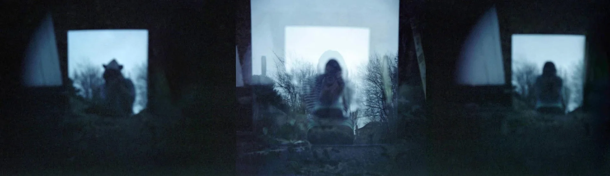

Irina Csapo
Photography, for me, is a delightful compulsion, a way of paying attention to places and moments that are easy to pass by. I take images everywhere I go and of everything I see.

Irina Csapo
Photographer since fourteen. A senior product designer by trade, in Milton Keynes.
Studies
BA Photographic Arts, 2009–2012
Westminster University, London, UK
Journey
I started taking photos and videos at 14 years old, on my little Sony camcorder and a commercial film camera. I was the family's photographer and I never stopped taking photos.
Over the years I've been involved with various photography clubs and communities in Romania and in the UK, graduated with a BA in Photographic Arts, and a few months later took a job as a graphic designer in a print company.
Today I am a senior product designer, working across web and mobile applications, building and shipping my own products.
Photography never left me. I will carry this delightful compulsion with me for as long as I have eyes.
Thanks for being here!
If you'd like to know more about what I do or just say hello, connect with me on LinkedIn, follow my Cosmic Pets, my Art or email me at hello@irinacsapo.co.uk